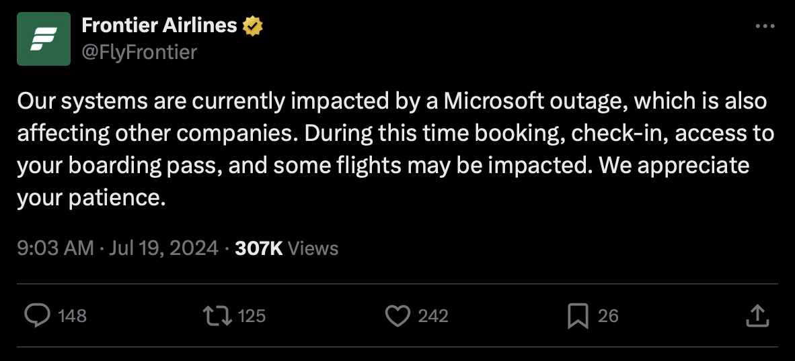
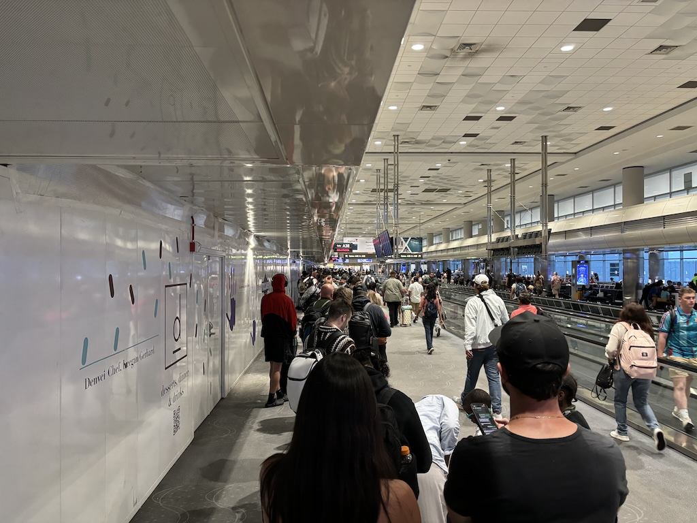
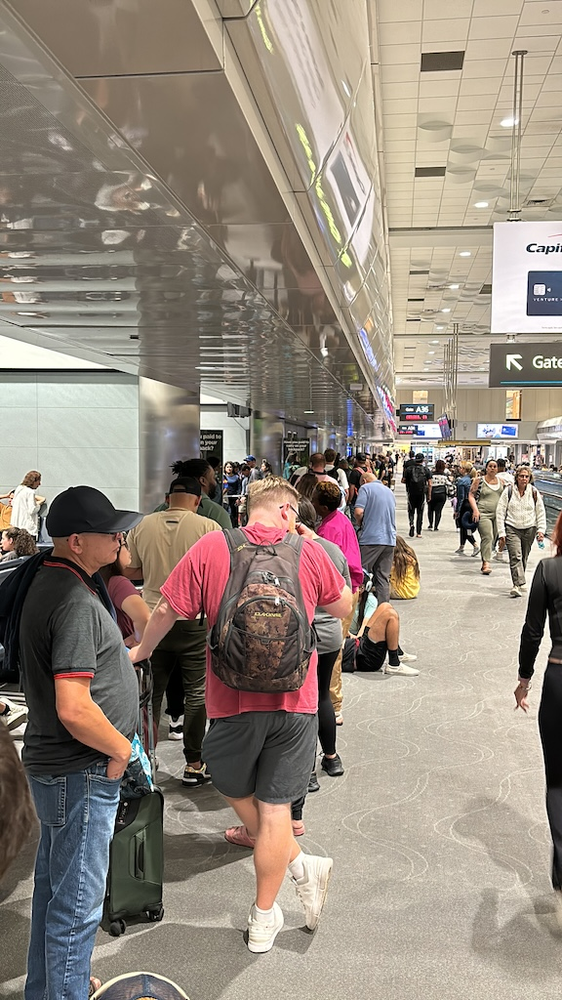
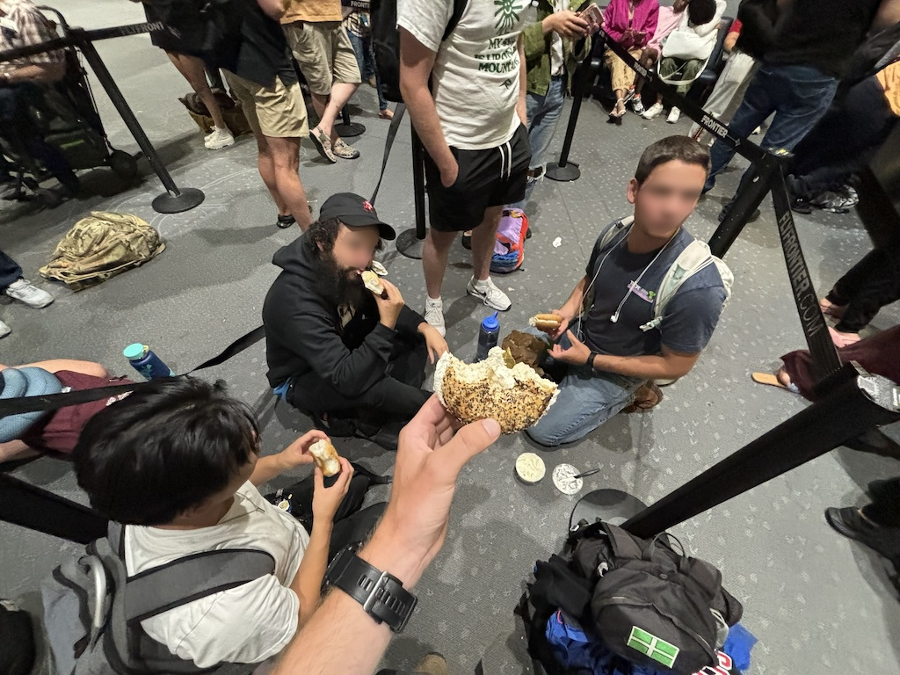
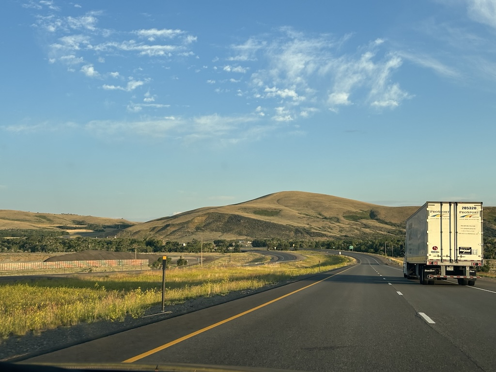
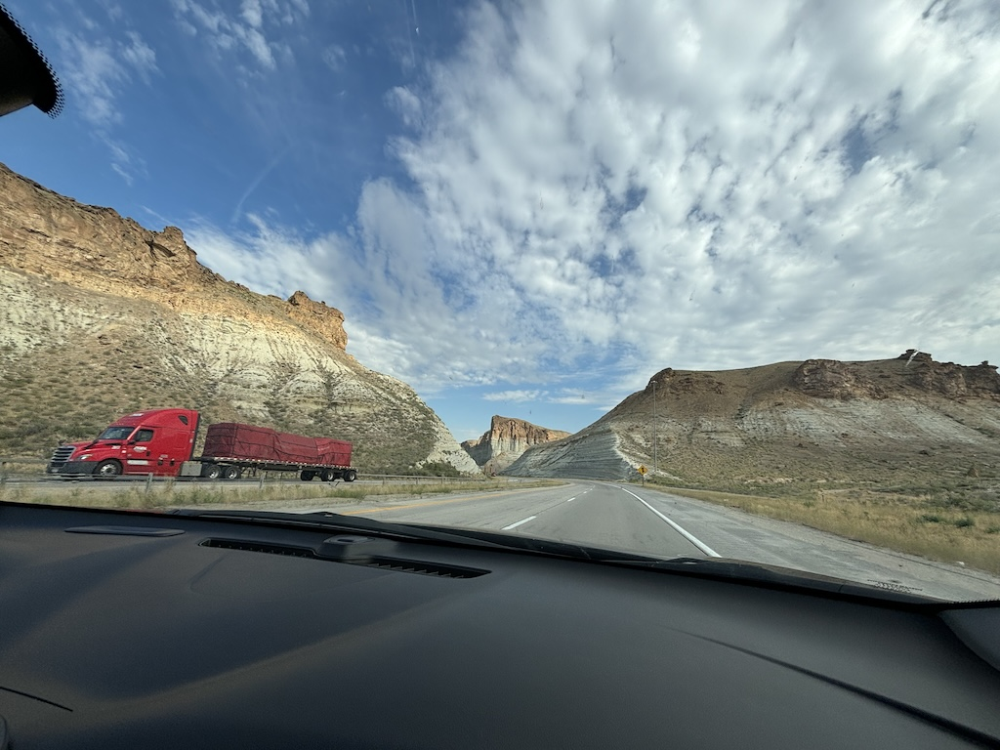

19th July 2024
Note that for privacy reasons the names in this article have been changed.
It's 16:30 and I'm waiting at the gate for my flight to Salt Lake City. Everything in the airport is running smoothly, Adrian and his girlfriend flew out an hour or so ago and I'm about to do the same. At roughly this time the Crowdstrike incident occurs where a large number of windows computers across central America receive an update that causes an irreversible crash. This includes key infrastructure servers for Frontier, the budget airline I am flying with. In the airport things seem calm, although the staff haven't asked us to board the plane and it's 5 minutes to departure.
Our first update from the Frontier staff comes around 15 minutes after our planned departure time.
"Due to technical difficulties we will be delaying boarding. We will be giving an update on the situation soon."
Not an out of the ordinary update and as I'm not against the clock on my plans no problem for me. I get chatting with a guy from Los Angeles who I quickly work out is very wealthy. He shows me his instagram account which specializes in photos of super cars in scenic spots. He recommends I visit Joshua Tree and shows me his production quality photos of a car there. It turns out his Dad is the one who owns all the cars, leasing them to people for short term use.
"As mentioned before we have delayed boarding due to a technical issue. We will be giving an update on the situation soon."
It's about 17:45 at this point; Our planned departure time was 35 minutes ago. Some people are asking for more information from the staff but looked upset by the response. I check the @flyfrontier Twitter account and find they have posted about the issue.
I realise the extent of this problem when I try to check my flight information. The website is down. No one in the gate can see it. The app is accessible and loads but everyone's experience is inconsistent. After a bit of research I discover that the Crowdstrike update was the cause and the extent of the damage. A few of the older people nearby ask me to explain what I found but I struggle to do so, not fully grasping it myself. We reach an hour after our planned departure time and people are getting tired and frustrated. A third update from the staff is announced.
"As mentioned before we have delayed boarding due to a technical issue. There will be an update on this situation in 2 hours at eight pee-em, in two hours time there will be an update"
An audible moan is the response from the crowd and 1 fairly angry guy loudly complains about the issue across the room with the staff. His kids and wife look very embarrassed by this, looking away as everyone turns to watch. For the next two hours I lend a guy from Egypt a phone charger, go for 1 wander around the terminal and chat more with the other people waiting in the seats nearby. A lot of people are convinced the flights completely cancelled and some are reporting back about the length of the queue at the Frontier help desk. A few even buy new tickets for a flight with Southwest; apparently the issue hasn't affected them. On the up side I end up getting a lot of recommendations from the Californian guy about where to go on the West coast. 20:00 rolls around and we get our final update from the staff.
"We're afraid to announce that the flight is cancelled, the flight is cancelled and will not be departing to Salt Lake City from this terminal"
At the mention of the word cancelled everyone gets up and heads down the wing. Many of them like me head straight o the help desk to see when the next flight out to Salt Lake is. I get here and the airport is a lot busier. Lots of people are in huddles planning what to do, more than normal are sleeping in chairs and there's generally a sense of urgency and disruption in the room. The queue rapidly grows but there is no movement at the front all. In the photo below you just barely see the queue dip in to where the desk is on the left. It was 20:24 when this was taken.
This queue did begin to move after about 20 minutes, but by the pace we were going it seemed like around 6 people were being seen every hour. for the next few hours I get chatting to some of the others in the queue, talking about what's going on and generally hearing people's stories. A good number of people in the first hour leave the queue with newly booked tickets with other flight companies on their phone screens.
One slightly delirious man walks past at about 22:00 rambling loudly about the issue. He's dressed in a full suit and is probably in his mid-50s with long grey hair. As he passes me he's actually laughing and shouts "this is what you get for booking budget". I reply that it's a bit uncalled for to taunt everyone in the queue and he jumps straight into his whole story. He is in fact also flying Frontier, or was, and was traveling to Washington state for a funeral the next day. He goes on to detail the 3 flight journey he has been able to book with airlines that are still operational that should just barely get him there by 7am. I guess with his few free hours before flight number 1 he decided to walk around the airport shouting at people. Potentially a nice guy on a good day, today not so much.
At about midnight we have moved probably half the distance to the front of the queue. Below is a photo of where I was and as you can see most people in front of me abandoned this effort.
Everyone is very tired and fed up at this point, but I'm committed to making it to the front of this queue. A guy I meet jokes with me that we will die in this queue, both of us keen for at least a free dinner or hotel from Frontier. It's around 2 in the morning and we're at the front. The staff explain that their computers can't do anything regarding re-bookings or even hotel accommodation. I eventually beg for a food coupon, and after 20 minutes of the staff clicking around they send me an email with a promise they'll refund me. A lot of people are simply refusing to move from this area until they get a new booking. One man is kindly translating from english to spanish for the spanish speakers with bad english.
At this point I'm hanging out with specifically 4 other guys. On the right of the image below is an israeli guy living in Colorado who was able to get some bagels using the Frontier credit system and kind enough to share it with all of us. Standing to his left was a guy returning home to Salt Lake from a trip out East, also about our age. It turns out beer sellers at baseball games are hired by a single company for all the different teams. Our friend sat down with the cap on works for them on a zero-hours contract and flies between the stadiums picking up work. He is a member of the GoWild program that Frontier offer, a subscription service which sets all Frontier flights to just 20 dollars. He's flown 89 times already this year, averaging 3 a week. Finally the guy in the bottom left is also from Salt Lake and was the only one to try switching to the help desk outside the airport. He was told they'd be giving out hotel vouchers which after visiting he told us was a lie. Feeling bad we let him cut in with us.
So it's 2 in the morning, we can't get hotel and there are no flights until tomorrow. We agree as a group to bin this off entirely. Let's just drive there.
We hired a Chevrolet Malibu by 3 and hit the road. With myself and my Israeli-American friend the two registerd drivers we take turns through the night, swapping out to sleep. The morning light comes and the view of the Colorado wilderness is stunning. Excluding the occasional delivery vehicle the roads are empty and peaceful.
At the border we take a photo with the 4 of us, the sign and the Chevvy itself. Soon the landscape changes from hills and farming land to spaghetti-western style canyons and rocks. It's a gradual change but a distinct one. At around 10 AM I realise it doesn't matter what time you drive this highway, it's always this quiet. No one is here except the long distant hauling companies in their monumental trucks.
At around midday we arrive in Salt Lake City, dropping off the rental at the branch inside the airport. We settle the cost of the car hire (it was around 50 dollars each in the end), swap social media handles to keep in contact and say our goodbyes.
From a chaotic and stressful situation this great little adventure appeared. I think this story is a good example of the benefits of striking up conversation with strangers. If it wasn't for the people that rode in that car with me I would have probably been stuck in Denver for another day, had very little sleep and felt much more bitter about the whole situation. Instead I got to learn about what life is like here directly from the locals, see the landscape between these two major towns and have a positive fun memory of this whole incident. Cheers guys for the ride and all the best.
Navigate home